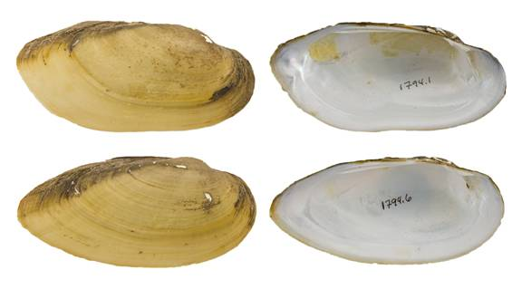

Lampsilis teres (Rafinesque, 1820)
Yellow Sandshell

Lampsilis teres – top image, female, San Jacinto River [San Jacinto River drainage], length 88.0 mm; bottom image, male, San Jacinto River [San Jacinto River drainage], length 87.0 mm.
Identification
Shell structure: somewhat thin to moderately thick, generally inflated; outline elongate elliptical; posterior ridge low and rounded; posterior slope flat to slightly curved.
Shell outline: elongate elliptical
Posterior ridge: low and rounded.
Shell color: yellow or yellowish-brown, umbo may be colored with red or brown highlights; surface subglossy to glossy.
Rays: may present green or black rays.
Shell texture: smooth.
Umbo: low, broad, elevated above the hinge line; umbo cavity moderately deep.
Umbo sculpture: absent, indistinct or fine ridges that may be wavy or nearly double-looped.
Pseudocardinal teeth: triangular, erect, subcompressed to somewhat thick, and serrate, 2 in the left valve, usually divergent but sometimes appear as a single tooth, anterior tooth larger than posterior, 1 tooth in the right valve.
Lateral teeth: long, thin, straight to slightly curved, 2 in left valve, 1 in right valve.
Interdentum: long and very narrow or nearly absent.
Nacre: white, occasionally with pink or salmon tint; iridescent posteriorly.
Other: sexual dimorphism present, but can be subtle and difficult to distinguish, posterior margin rounded to truncate in females, bluntly pointed in males; females tend to be more inflated posteriorly than males.
General range
Mississippi River basin from Louisiana north to Minnesota, and west to Kansas and South Dakota. Ohio River basin and parts of the Tennessee and Cumberland drainages. Found throughout the Gulf Coast drainages from the Rio Grande of Texas and Mexico to the Mobile River basin.
Habitat
Streams to rivers, but not in the headwaters, lakes, reservoirs and canals. In riverine habitats it is often found in nearshore bank and backwater habitats, although occasionally in riffles. Typically occurs in slow to moderate currents, in mud and sand substrates.
Legal listing status
USFWS: None